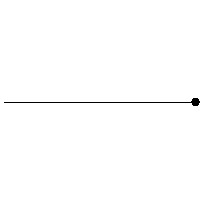
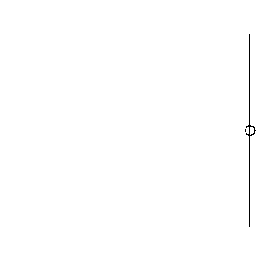
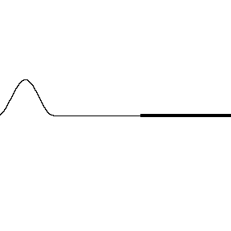
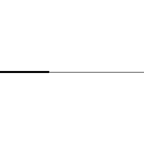

Aula8-66: Velocidade, reflexão e refração de ondas em cordas
Velocidade de uma onda em cordas (equação de Taylor)
A velocidade de uma onda numa corda depende de duas variáveis: a densidade linear da corda e a força de tração. A equação que nos permite calcular essa velocidade é a equação de Taylor:
Em que:
é a força de tração que age sobre a corda;
é a densidade linear da corda. (
).
Reflexão de uma onda numa corda
Um pulso (uma unidade de perturbação; perceba, então, que uma onda é uma sequência de pulsos) que se propaga numa corda, ao encontrar um novo meio que impeça a passagem dessa onda, bloqueando-a, sofrerá reflexão. Ao refletir, o pulso pode ter sua fase conservada ou invertida.
|
➔ CORDA COM UMA EXTREMIDADE IMOBILIZADA NUMA INTERFACE Neste caso, ao encontrar o obstáculo — estando a corda fixada a ele —, a onda sofre uma reflexão com inversão de fase. |
➔ CORDA COM UMA EXTREMIDADE MÓVEL NUMA INTERFACE Neste caso, ao encontrar o obstáculo — estando a corda conectada a ele com mobilidade —, a onda sofre uma reflexão mantendo a mesma fase da onda incidente. |
|
|
 |
 |
|
Refração de uma onda numa corda
Um pulso que se propaga numa corda, ao encontrar um novo meio, será em parte refratado e em parte refletido, como mostram as figuras abaixo. Em se tratando de refração, não há inversão de fase: ela é sempre preservada.
Obs.: Sempre que houver refração, haverá também reflexão, que por vezes será imperceptível.
|
➔ PULSO DE UMA CORDA MENOS DENSA A UMA CORDA MAIS DENSA |
➔ PULSO DE UMA CORDA MAIS DENSA A UMA CORDA MENOS DENSA |
|
|
 |
 |
|
|
Sempre que o pulso viajante passa de uma corda menos densa para uma corda mais densa, a parcela do pulso que segue para a outra corda preserva a fase, e o pulso refletido, como é esperado, inverte-a. |
Sempre que o pulso viajante passa de uma corda mais densa para uma corda menos densa, a parcela do pulso que segue para a outra corda preserva a fase, e o pulso refletido também, como é esperado. |